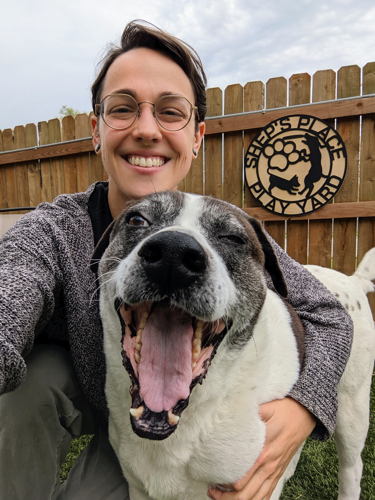

Overlooked at 10 years old, Luna joined Shep's Place after unfortunate circumstances landed her in a crowded shelter outside of Kansas City, MO. Gentle care and playful sessions with other pups coaxed back her playful spirit. One day, a family seeking a loyal companion met Luna. They saw the wisdom in her eyes and the wag of her tail. Luna blossomed in their loving home, her walks purposeful and her evenings spent curled up with her new family – a testament to the joy Shep's Place brings to deserving senior dogs.